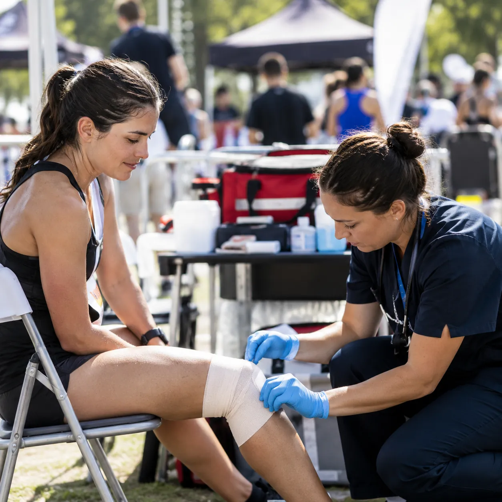

Todas las edades y patologías
Cuidadoras domiciliarias 24 h
Acompañamiento en casa de día, de noche o las 24 horas, adaptado a la rutina de cada persona.
Cuidadoras 24 h · Enfermería · Eventos
Para personas de todas las edades y patologías, con personal capacitado y matriculado. También cubrimos eventos sociales, deportivos y culturales.
Todas las edades y patologías
Acompañamiento en casa de día, de noche o las 24 horas, adaptado a la rutina de cada persona.
Personal matriculado
Controles y procedimientos de salud en el domicilio, siguiendo las indicaciones del médico.

Sociales, deportivos y culturales
Personal de salud en tu evento para asistir a quien lo necesite, de principio a fin.
Cada persona tiene su ritmo. Armamos el cuidado alrededor de sus horarios, sus rutinas y lo que indica su médico.
Una ayuda puntual en el momento del día que haga falta.
Compañía y asistencia mientras la familia trabaja.
Alguien despierto y atento, para que todos descansen.
Cuidado continuo, de día y de noche, todos los días.
Para todas las edades
Enfermeras y enfermeros con matrícula vigente y cuidadoras capacitadas en atención domiciliaria. Para cada caso elegimos a quien mejor se adapta a la persona y a su familia.
Por WhatsApp nos contás quién necesita el cuidado y en qué situación está.
Vemos horarios, cuidados e indicaciones médicas para entender qué hace falta.
Elegimos la cuidadora, el enfermero o la enfermera que mejor se adapta a la persona.
Estamos disponibles para la familia y ajustamos el cuidado cuando algo cambia.
¿Tu duda no está? Escribinos por WhatsApp
A personas de todas las edades y con cualquier patología: personas mayores, adultos que se recuperan de una internación y niños. Adaptamos el cuidado a cada caso.
La cuidadora acompaña la vida diaria: higiene, comidas, movilidad y compañía. La enfermería se ocupa de los procedimientos de salud, como controles, inyectables o curaciones, según la indicación médica.
Sí. Podés pedir un cuidado por horas, por turnos de día o de noche, o continuo las 24 horas.
El personal de enfermería tiene matrícula vigente y las cuidadoras están capacitadas para la atención domiciliaria.
Eventos sociales, deportivos y culturales. Contanos la fecha, el lugar y la cantidad de personas, y te preparamos la cobertura.
Escribinos con la dirección del domicilio o del evento y te confirmamos la cobertura para esa zona.
Contanos quién necesita el cuidado y te respondemos por WhatsApp con una propuesta para tu caso.